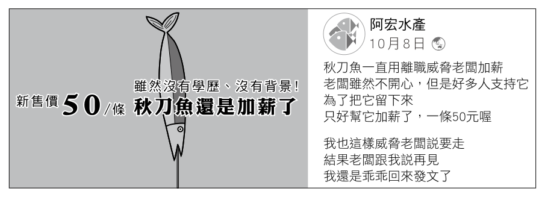
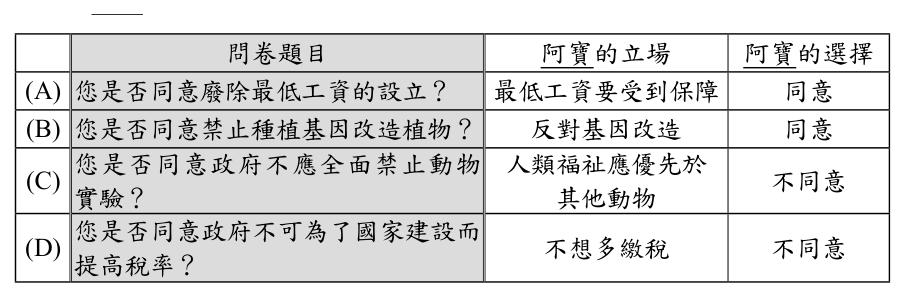
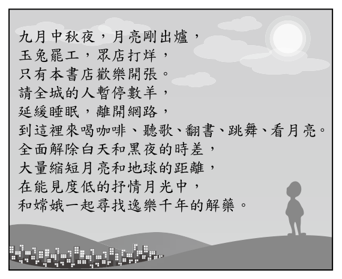
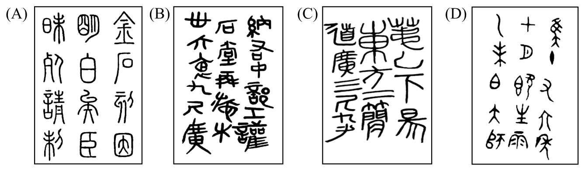
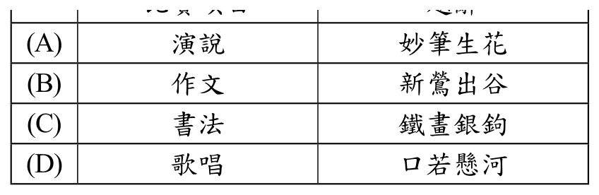
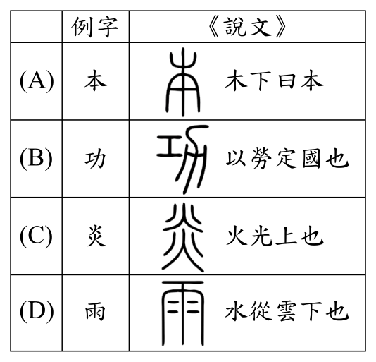
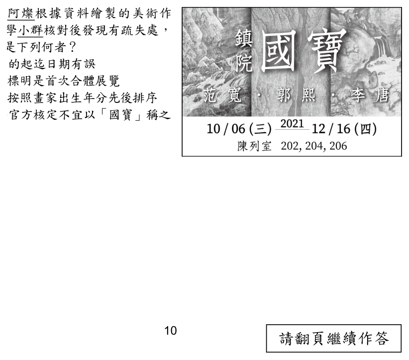
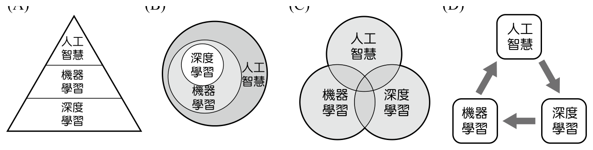

113 年國中教育會考國文試題與答案
這一頁是民國 113 年國中教育會考國文的整份歷屆試題，共 42 題，題目與標準答案出自心測中心 會考歷屆試題（依著作權法 §9，考試試題不受著作權保護），其中 42 題附有詳解。以下逐題列出題幹、選項與答案；要計時作答或記錄成績，請用線上練習。
線上作答這一科 →
全部 42 題
第 1 題
這則粉絲專頁貼文的用意，最可能是下列何者？

- （A）徵求粉絲專頁新小編
- （B）預告直播促銷的期程
- （C）暗示秋刀魚產季將近
- （D）宣布調漲秋刀魚價格
答案：（D）
詳解與考點
正解：題幹問粉絲專頁貼文的用意，圖文以秋刀魚成本上漲、漁獲減少等訊息帶出價格變動，重點是宣布調漲秋刀魚價格，D 為正解。
A：貼文沒有徵求新小編的資訊。
B：貼文沒有預告直播促銷的期程。
C：貼文重點是成本與漁獲造成的價格調整，不是暗示秋刀魚產季將近。它看起來對，是把秋刀魚相關訊息誤讀成產季預告，忽略貼文的價格語氣。
本題考點：實用文本理解——須整合圖文中的原因與行動訊息；主旨判準——成本上漲與漁獲減少指向售價調整，而非徵人、直播或產季預告。
第 2 題
下列文句，何者用字完全正確？
- （A）那張字畫的真跡被竊後，至今不知所衷
- （B）他只知言襲前人作法，完全不懂得變通
- （C）你去失誤招領處詢問，也許能找回錢包
- （D）樹欲靜而風不止，為人子女盡孝要及時
答案：（D）
詳解與考點
正解：題幹問「用字完全正確」，須逐字辨別同音異字。D「樹欲靜而風不止」用字正確，常用以比喻子女想奉養父母時，父母卻已不在，為人子女盡孝要及時，故 D 為正解。
A：「不知所衷」的「衷」應改為「終」，正確寫法是「不知所終」，指不知道最後的結果或去向，錯誤。它看起來對，是因為「衷」有內心、中心之義，容易與「終」混淆。
B：「言襲」應改為「沿襲」；「沿襲」指依照舊例承接使用，錯誤。
C：「失誤招領處」應改為「失物招領處」；「失物」才指遺失的物品，錯誤。
本題考點：同音異字辨識——依詞義判斷正字，不可只憑讀音選字；固定詞語——「不知所終」「沿襲」「失物招領處」須完整記憶。
第 3 題
下列文句中的謙詞，何者使用最恰當？
- （A）足球賽後，亞軍隊伍向冠軍隊伍道賀：「承讓了，恭喜！」
- （B）同樂會時，班長自告奮勇：「如果大家不嫌棄，我就獻醜了。」
- （C）主席在會議的結語：「感謝各位提供的淺見，我們會審慎評估。」
- （D）對宴會的主人說：「謝謝你準備的薄酌，讓大家吃得非常滿足。」
答案：（B）
詳解與考點
正解：題幹問謙詞使用，須先判斷說話者身分，再看詞語是自謙或敬人。B中班長說「我就獻醜了」，「獻醜」是謙稱自己的表演技藝不佳，用於自謙表演，符合語境，故 B 為正解。
A：「承讓」是獲勝者謙稱對方相讓時所說，亞軍向冠軍道賀時使用不當，錯誤。
C：「淺見」是謙稱自己的見解，主席不能用來稱呼各位與會者的意見，錯誤。它看起來對，是因為感謝他人意見時語氣客氣，但謙詞的對象只能是自己。
D：「薄酌」是主人謙稱自己準備的酒席，客人對主人說「你準備的薄酌」不當，錯誤。
本題考點：謙敬辭——先辨說話者，再判斷詞語的對象；判準——「獻醜」「淺見」用於自謙，「承讓」由勝方說，「薄酌」由宴會主人自稱。
第 4 題
某些問卷使用了否定詞，受訪者有時不易理解內容，感到混淆。根據下列問卷題目，阿寶的立場與其選擇相符的是哪一個？問卷題目阿寶的立場

- （A）問卷題目：您是否同意廢除最低工資的設立？／阿寶的立場：最低工資要受到保障／阿寶的選擇：同意
- （B）問卷題目：您是否同意禁止種植基因改造植物？／阿寶的立場：反對基因改造／阿寶的選擇：同意
- （C）問卷題目：您是否同意政府不應全面禁止動物實驗？／阿寶的立場：人類福祉應優先於其他動物／阿寶的選擇：不同意
- （D）問卷題目：您是否同意政府不可為了國家建設而提高稅率？／阿寶的立場：不想多繳稅／阿寶的選擇：不同意
答案：（B）
詳解與考點
考點：邏輯閱讀（否定詞理解）。B「您是否同意禁止種植基因改造植物？」立場「反對基因改造」→選「同意」（同意禁止）符合邏輯。此類題要先確認立場，再判斷含否定詞的問句應選同意或不同意，是語意邏輯題的典型陷阱。【AI 整理需查證】
第 5 題
右側是某書店開幕的廣告文案。根據內容，下列敘述何者錯誤？

- （A）融合節慶的元素
- （B）邀請民眾蒞店同樂
- （C）說明終身學習的重要
- （D）點出書店開幕日晚上營業
答案：（C）
詳解與考點
正解：題幹要求依廣告文案找出錯誤敘述，須逐項核對文案是否明說。C 的「說明終身學習的重要」在文案中沒有依據；文案只寫中秋夜開幕與店內活動，故 C 為正解。
A：文案以「中秋夜、玉兔、嫦娥」營造節慶氣氛，符合融合節慶元素，錯誤。
B：文案邀請民眾來店喝咖啡、聽歌、跳舞，確有蒞店同樂之意，錯誤。
D：文案以「眾店打烊、本店歡樂開張」點出書店在開幕日晚上營業，錯誤。
本題考點：廣告文案理解——敘述是否正確，須回扣文案的明示訊息；無中生有判準——看到「書店、翻書」不能自行推成終身學習，文案未提即不可選。
第 6 題
下列詞語中的「落」字，何者與「月落星沉」的「落」字意義相同？
- （A）下「落」不明
- （B）草木疏「落」
- （C）丟三「落」四
- （D）水「落」石出
答案：（D）
詳解與考點
正解：題幹要比對「落」的字義；「月落星沉」的「落」是降落、位置下移。D「水落石出」指水位下降，與月亮沉落同為位置下移，故 D 為正解。
A：「下落不明」的「落」指去向、所在，不是下降，錯誤。
B：「草木疏落」的「落」指稀疏、分散，不是下降，錯誤。
C：「丟三落四」的「落」指遺漏，不是下降，錯誤。
本題考點：一字多義——先以語境判定字義，再比對核心義；「落」表位置下移時，可見於月落、水落，不能望文生義混同去向、稀疏或遺漏。
第 7 題
「人生，其實像一條從寬闊的平原走進森林的路。在平原上同伴可以結夥而行，歡樂地前推後擠、相濡以沫。一旦進入森林，草叢和荊棘擋路，情形就變了，各人專心走各人的路，尋找各人的方向。」這段文字的觀點與下列何者相去最遠？
- （A）人生總有坎坷，不會永遠是平順坦途
- （B）不論結伴或是獨行，皆應樂觀面對人生
- （C）天下無不散的筵席，朋友總有分離的時候
- （D）人的選擇不同，每個人都得自己去創造未來
答案：（B）
詳解與考點
正解：題幹以平原到森林比喻人生由結伴走向各自尋路，關鍵在「各人專心走各人的路，尋找各人的方向」。B 主張無論結伴或獨行都應樂觀面對人生，加入原文未談的樂觀態度，與原文觀點相去最遠，故 B 為正解。
A：森林中的草叢、荊棘擋路，能呼應人生並非永遠平順，錯誤。
C：由同伴結夥而行轉為各人尋找方向，可呼應朋友終有分離，錯誤。
D：各人尋找各人的方向，正可呼應每個人須自行創造未來，錯誤。
本題考點：觀點異同——先抓作者明示的核心觀點，再判斷選項是否可由文意推出；最遠判準——選項若另添原文沒有的價值態度，如「樂觀」，即可能與原文距離最大。
第 8 題
下列文句「」中的字，何者讀音正確？
- （A）在賣場集滿點數就可「兌」換商品：ㄩㄝˋ
- （B）一望無「垠」的海面上漂流著幾艘小船：ㄍㄣ
- （C）這場音樂會的門票開賣不久就售「罄」：ㄑㄧㄥˋ
- （D）櫃檯上的花瓶插了一束紫色的「桔」梗花：ㄓㄜˊ
答案：（C）
詳解與考點
正解：題幹要逐字核對教育部標準讀音；C 的「罄」在「售罄」讀 ㄑㄧㄥˋ，意為完、盡，標音正確，故 C 為正解。
A：「兌」換的「兌」讀 ㄉㄨㄟˋ，非 ㄩㄝˋ。
B：一望無「垠」的「垠」讀 ㄧㄣˊ，非 ㄍㄣ。
D：「桔梗」的「桔」讀 ㄐㄧㄝˊ，非 ㄓㄜˊ；「桔」有不同讀音，容易因字形或其他詞義混淆。
本題考點：字音辨識——須以詞語中的標準讀音判斷；常見讀音——「兌」ㄉㄨㄟˋ、「垠」ㄧㄣˊ、「罄」ㄑㄧㄥˋ、「桔梗」的「桔」ㄐㄧㄝˊ。
第 9 題
「由國家出資的遠征計畫，經費較高，卻少有重大發現。官方的主事者常攜帶大批補給裝備，而非輕裝簡從。且受制於政治考量，無法自行選拔合適的成員。反觀私人支持的遠征隊較能達成目標，主事者專心致志，可主導成員的挑選，每個人都有擅長的領域。」根據本文，私人支持的遠征隊較能達成目標的原因不包含下列何者？
- （A）政治考量較少
- （B）補給裝備較多
- （C）主事者權限較大
- （D）計畫成員較專業
答案：（B）
詳解與考點
正解：題幹問私人支持遠征隊較能達成目標的原因「不包含」何者，須把私人隊伍的優勢與國家隊伍的特點分開。B 的補給裝備較多，是官方主事者攜帶大批補給裝備的情況，不是私人遠征隊的優勢，故 B 為正解。
A：私人隊伍不受官方政治考量所制，可對應政治考量較少，錯誤。
C：私人主事者可主導成員挑選，表示權限較大，錯誤。
D：每個成員都有擅長領域，表示成員較專業，錯誤。
本題考點：閱讀排除法——先鎖定題幹問的是「不包含」，再將每個選項逐一回扣文本；對比判準——屬於官方遠征隊的特點，不可移作私人隊伍的成功原因。
第 10 題
〈瑯琊臺刻石〉是秦代的篆刻文字，其特點在於：用筆圓轉，結構勻稱，筆畫粗細均勻。根據字體特徵，下列何者最可能是〈瑯琊臺刻石〉？

本題選項為上圖中的 A／B／C／D，請對照圖片作答。
答案：（A）
詳解與考點
正解：題幹以「用筆圓轉、結構勻稱、筆畫粗細均勻」界定秦代小篆〈瑯琊臺刻石〉的特徵。A 的字形線條圓轉勻整、粗細一致，符合小篆典型風貌，故 A 為正解。
B：字形的筆畫方折或粗細不均，與小篆圓轉、均勻的特徵不合，錯誤。
C：結構參差或筆畫不夠勻整，不符合小篆規整勻稱的特徵，錯誤。
D：字形呈現方折或粗細變化，較近隸書或其他書體，不合小篆特徵，錯誤。
本題考點：篆書字體辨識——小篆以線條圓轉、結構勻稱、筆畫粗細均勻為判準；圖像選擇——須逐項比對字形特徵，不可只憑年代或字的內容判斷。
第 11 題
下列各項比賽優勝的獎牌題辭，何者搭配最恰當？

- （A）演說：妙筆生花
- （B）作文：新鶯出谷
- （C）書法：鐵畫銀鉤
- （D）歌唱：口若懸河
答案：（C）
詳解與考點
正解：本題考題辭與比賽項目的貼切搭配。「鐵畫銀鉤」形容書法筆力遒勁、剛柔並濟，用以題贈「書法」比賽最為切合，故選C。
A：「妙筆生花」形容文思泉湧、文章出色，宜配「作文」，用於「演說」不當，錯誤。
B：「新鶯出谷」形容歌聲清亮如出谷黃鶯，宜配「歌唱」，用於「作文」不當，錯誤。
D：「口若懸河」形容口才滔滔、能言善辯，宜配「演說」，用於「歌唱」不當，錯誤。
本題考點：成語題辭與對象的專屬搭配——鐵畫銀鉤（書法）、妙筆生花（作文）、新鶯出谷（歌唱）、口若懸河（演說）；陷阱在混淆各成語的專用對象而張冠李戴。
第 12 題
「老農家貧在山住，耕種山田三四畝。苗疏稅多不得食，輸入官倉化為土。歲暮鋤犁傍空室，呼兒登山收橡實。西江賈客珠百斛，船中養犬長食肉。」關於這首詩的說明，下列敘述何者最恰當？
- （A）就形式而言，是一首七言律詩
- （B）就類別而言，是一首山居躬耕的閒適詩
- （C）就內涵而言，描繪農民於繁重稅賦下艱困的生活
- （D）就技巧而言，以農家與商賈對比，凸顯人情的可貴
答案：（C）
詳解與考點
正解：詩中「苗疏稅多不得食」、「輸入官倉化為土」、「收橡實」寫老農在重稅下缺糧；末句又寫商賈「船中養犬長食肉」，以富者養犬食肉襯托農民困苦，描繪繁重稅賦下艱困的生活，故 C 為正解。
A：全詩雖有8句、每句皆為7字，但不符合近體詩的格律要求，屬七言古詩，不是七言律詩。
B：山居與耕種只是背景，詩中重點是老農無食、收橡實的困苦，不是躬耕閒適。
D：農家與商賈的對比凸顯賦稅不公與貧富懸殊，不是歌頌人情可貴；雖然詩中確實使用對比技巧，選項卻誤判對比所凸顯的主旨。
本題考點：古詩主旨判讀——抓取重稅、無食、收橡實等困境意象；映襯技巧——把農民困苦與商賈富足並列，用以凸顯貧富不均與賦稅不公；詩體辨識——8句、每句7字不必然是七言律詩，仍須檢查格律。
第 13 題
「遺忘就像舞臺打燈後的暗處，漆黑越大片，就越能凸顯光照的明亮。遺忘幫我們揀選人生最值得珍惜的過往片段。因此，遺忘是無須哀悼的，忘的越多，就越應該把眼光投向光照的所在，那才是值得留戀的人事代謝。」下列何者最接近本文作者的觀點？
- （A）生命中的人事代謝無須遺忘
- （B）遺忘如同舞臺上光照的所在
- （C）不被遺忘的事物才最值得珍惜
- （D）遺忘越多越能看見人生光明面
答案：（C）
詳解與考點
正解：題幹文字說遺忘幫我們揀選最值得珍惜的過往片段，並把眼光投向光照所在；因此未被遺忘、被保留下來的事物最值得珍惜，C 最接近作者觀點。
A：作者並非說人事代謝無須遺忘，反而肯定遺忘具有揀選的作用。
B：文中把遺忘比作舞臺打燈後的暗處，不是光照所在。
D：作者雖說忘得越多應把眼光投向光照所在，但核心在遺忘後留下的珍貴片段，不能化約為忘得越多就越能看見光明面。它看起來對，是擷取了原文部分語句，卻省略「揀選值得珍惜者」的條件。
本題考點：作者觀點掌握——要整合比喻與結論，不能只摘取片段語句；遺忘的功能——使值得珍惜的過往片段被凸顯與留戀。
第 14 題
「玉慘花愁出鳳城，蓮花樓下柳青青。尊前一唱〈陽關曲〉，別個人人第五程？ 尋好夢，夢難成。有誰知我此時情？枕前淚共階前雨，隔個窗兒滴到明。」關於這闋詞的分析，下列敘述何者錯誤？
- （A）首句情景交融，「慘」、「愁」二字點出別情
- （B）下闋首句點出「我」為了追尋理想而遠離佳人
- （C）末尾二句暗示「我」滿懷離情別緒，一夜未眠
- （D）上闋描寫分別時的情景，下闋描寫別後的思情
答案：（B）
詳解與考點
正解：題幹問詞作分析何者錯誤，關鍵在「尋好夢，夢難成」承接離別後的相思；它寫的是主人公思念佳人、難以成眠，並無為追尋理想而離去的意思，故 B 為正解。
A：首句以「玉慘花愁」寫景，並以「慘」、「愁」點出別情，情景交融，正確。
C：「枕前淚」與「階前雨」相互映照，且「滴到明」暗示滿懷離情、徹夜未眠，正確。
D：上闋寫飲酒唱〈陽關曲〉的分別情景，下闋寫尋夢不得的別後思情，正確。
本題考點：詞作情意判讀——先依上下闋的時間與情境辨別分別當下、別後相思；詩詞分析須以文本語句為據，不可把文中未寫的離別動機加進去。
第 15 題
「溝通包含了三要素：內容、語調、非語言行為。若某人說話時的語調、手勢、表情，和他所說的內容不一致或情境模糊時，人們比較容易受到語調和非語言行為的影響。」下列情境，何者最符合這段文字的內容？
- （A）說話用字過度簡潔，會讓人覺得沒有禮貌
- （B）同樣的內容，由嚴肅的老師說出來比較具有說服力
- （C）朋友收到禮物時臭著臉說「謝謝」，會覺得他其實並不開心
- （D）聽廣播時，因看不到主持人的表情、手勢，無法判斷內容的真實性
答案：（C）
詳解與考點
正解：題幹指出語調、手勢、表情與說話內容不一致時，人們較受語調和非語言行為影響。C中朋友臭著臉卻說「謝謝」，表情與語言內容不一致，旁人會判斷他其實不開心，最符合題意，故C為正解。
A：談的是用字簡潔與禮貌的關係，沒有呈現內容、語調、非語言行為不一致，錯誤。
B：談嚴肅老師說話的說服力，沒有呈現三要素相互矛盾時的理解，錯誤。
D：廣播看不到表情、手勢，不等於無法判斷內容真實性；題幹討論的是三要素不一致時的判讀，錯誤。
本題考點：溝通三要素——內容、語調與非語言行為共同傳遞訊息；情境判讀——三者不一致或情境模糊時，優先依語調、手勢與表情理解說話者的真意。
第 16 題
下列文句中的詞語，何者使用最恰當？
- （A）飲食應注重營養均衡，五穀不分才健康
- （B）這房子經歷風災依然堅固，真是不愧屋漏
- （C）使用儀器以蠡測海後，他終於得到準確數據
- （D）對於行將就木之人，世間的一切已無須牽掛
答案：（D）
詳解與考點
正解：題幹要選詞語使用最恰當者。D 的「行將就木」指人年老體衰、快要死亡，用於「世間的一切已無須牽掛」的語境恰當，故 D 為正解。
A：「五穀不分」指不懂農事、脫離現實，不是飲食營養均衡，錯誤。
B：「不愧屋漏」指人在隱蔽獨處時仍謹慎自守；它看起來對，是因為含有「屋」字，但與房屋經風災後仍堅固無關。
C：「以蠡測海」比喻見識淺短，與「得到準確數據」的語意矛盾。
本題考點：成語辨義——依成語完整意義與句中情境配對，不可只按單字望文生義；「行將就木」——形容人年老體衰、將近死亡。
第 17 題
下列選項中的文字，旨在強調求學必須先立定志向。依據文意判斷，何者斷句最恰當？
- （A）夫學者之欲至於聖賢猶射者，之求中夫正鵠也。不以聖賢為準的而學者是，不立正鵠而射者也。
- （B）夫學者之欲至於聖賢，猶射者之求中夫正鵠也。不以聖賢為準的而學者，是不立正鵠而射者也。
- （C）夫學者之欲，至於聖賢猶射者之求中。夫正鵠也，不以聖賢為準的，而學者是不立正鵠而射者也。
- （D）夫學者之欲至，於聖賢猶射者之求。中夫正鵠也不以聖賢為準，的而學者是不，立正鵠而射者也。
答案：（B）
詳解與考點
正解：題幹強調求學須先立定志向，斷句時要保留完整的比喻與主謂結構。B 的「夫學者之欲至於聖賢，猶射者之求中夫正鵠也」以射箭求中正鵠比喻求學以聖賢為目標；「不以聖賢為準的而學者，是不立正鵠而射者也」結構完整、語意通順，故 B 為正解。
A：把「猶射者」切開，使「猶」所引出的比喻結構破碎，錯誤。
C：將「夫正鵠也」拆離前文，又混淆後句主謂關係，無法表達立志求學之意。
D：把「欲至」「於聖賢」及「中夫正鵠」任意切斷，文意錯亂。
本題考點：文言斷句——依完整詞組、主謂關係與虛詞位置劃分；比喻結構——「猶……也」須連貫理解，先確定本體與喻體再判斷句讀。
第 18 題
漢靈帝時，陳留蔡邕，以數上書陳奏，忤上旨意，又內寵惡之，慮不免，乃亡命江海，遠跡吳郡。吳有燒桐以爨1 者，邕聞火烈聲，曰：「此良材也。」因請之，削之以琴，果有美音。而其尾焦，因名「焦尾琴」。根據這則故事，下列敘述何者最恰當？
- （A）焦尾琴因蔡邕識材而製成
- （B）吳人向來以燒桐製琴聞名
- （C）焦尾琴製成後經火烤而音色優美
- （D）蔡邕因忤逆上意而遭流放至吳郡
答案：（A）
詳解與考點
正解：題幹故事中蔡邕聽見燒桐在火中的聲音，判斷它是良材，請來削製為琴，果然有美音；焦尾琴因蔡邕識材而製成，A 為正解。
B：吳人把燒桐用來當柴，文中沒有說吳人向來以燒桐製琴聞名。
C：琴尾焦是木頭在製琴前已被火燒過的結果，不是琴製成後再經火烤而音色優美。
D：蔡邕因上書忤旨、又受內寵厭惡，擔心不能倖免而「亡命」至吳郡，是逃亡，不是朝廷強制的流放。
本題考點：文言文情節判讀——須依事件順序判斷因果；詞義辨析——「亡命」指逃亡避禍，非流放；焦尾琴的由來——蔡邕辨識燒桐為良材後削製成琴，琴尾原已焦黑。
第 19 題
「蝸以涎見覓，蟬以聲見黏，螢以光見獲。故愛身者，不貴赫赫之名。」這句話的涵義與下列何者最接近？
- （A）人過留名，雁過留聲
- （B）所榮者善行，所恥者惡名
- （C）名不可簡而成，譽不可巧而立
- （D）樹大招風風損樹，人為名高傷喪身
答案：（D）
詳解與考點
正解：題幹以蝸因涎、蟬因聲、螢因光而被捕為例，說明自身過於顯眼會招致禍害，所以愛惜自身者不追求顯赫名聲；D「人為名高傷喪身」最相近。
A：強調人應留下名聲，與原文不貴赫赫之名的主張相反。
B：強調以善行為榮、以惡名為恥，重點在善惡評價，不在名高招禍。
C：強調名譽不能輕易建立，重點在成名困難，不在顯名的危險。
本題考點：文言文主旨理解與類比——須從事例歸納共同結果；判準——顯露特徵而遭捕獲，比喻名聲過盛可能招來禍患，因此不應貪求赫赫之名。
第 20 題
在象形字上附加符號表示抽象概念，是指事的造字方法之一。下列何者屬於這種造字方法？

本題選項為上圖中的 A／B／C／D，請對照圖片作答。
答案：（A）
詳解與考點
正解：題幹的關鍵是「在象形字上附加符號表示抽象概念」，這正是六書的指事。A「本」在象形字「木」的下端加一短畫，指示樹根所在，屬於在既有字形上加符號表意的指事字，故 A 為正解。
B：「功」由「力」表義、「工」表音，屬形聲字，不是指事字。
C：「炎」由兩個「火」相疊，以字形組合表火勢旺盛，屬會意字，不是指事字。它看起來對，是因為同樣藉字形表達意義，但會意是組合既有字義，指事則是加符號指示概念。
D：「雨」依雨滴落下的形象造字，屬象形字，不是指事字。
本題考點：六書——指事是在象形字上加符號指示抽象概念；判準——「本」以短畫標出樹根為指事，「功」為形聲、「炎」為會意、「雨」為象形。
第 21 題
鞠武〈報燕太子丹書〉曰：「臣聞快於意者虧於行，甘於心者傷於性。今太子欲滅悁悁1 之恥，除久久之恨，此實臣所當糜軀碎首而不避也。私以為智者不冀僥倖以要功，明者不苟從志以順心。事必成，然後舉；身必安，而後行。故發無失舉之尤，動無蹉跌2 之愧也。太子貴匹夫之勇，信一劍之任，而欲望功，臣以為疏。」關於這段文字的寫作分析，下列敘述何者最恰當？
- （A）分析個中利害關係，鼓勵太子須建功立業
- （B）採取先抑後揚筆法，肯定太子能獨當一面
- （C）以工整句式加強文氣，勸諫太子應謀定而後動
- （D）列舉前人失敗的事例，提醒太子不宜心存僥倖
答案：（C）
詳解與考點
正解：題幹要判斷寫作分析，關鍵在文中反覆出現工整對句，並主張「事必成，然後舉；身必安，而後行」。C指出以工整句式加強文氣，勸諫太子應謀定而後動，符合全文以對句論理、反對匹夫之勇的寫法，故 C 為正解。
A：作者雖談及功業，實際上是勸太子不可貪求僥倖之功，不是鼓勵他立即建功立業，錯誤。
B：文中沒有先貶抑再讚揚太子的安排，也未肯定太子能獨當一面，錯誤。
D：作者以道理勸說太子，沒有列舉前人失敗的具體事例，錯誤。
本題考點：文言文寫作技法——由句式與論旨判斷表達目的；對偶句——「智者不冀僥倖以要功，明者不苟從志以順心」使語勢整飭；主旨判準——反對憑一劍之勇，主張事成身安後再行動。
第 22 題
賈人某，至直隸界，忽大雨雹，伏禾中。聞空中云：「此張不量田，勿傷其稼。」天霽，他田偃壞，張田獨無恙。蓋張氏積粟甚富，每春間貧民皆就貸焉。償時多寡不較，悉納之，未嘗執概取盈，故鄉人名之「不量」。根據本文，「張田獨無恙」的原因最可能是下列何者？
- （A）張氏行善積德，得到護佑
- （B）貧民虔誠祈願，感動上天
- （C）張氏田產甚多無法丈量，看不出損失
- （D）賈人福澤深厚，連帶使張田倖免於難
答案：（A）
詳解與考點
正解：題幹問「張田獨無恙」的原因，須連結「此張不量田，勿傷其稼」與後文對「不量」的說明。張氏每逢春天借糧給貧民，償還時不計較多寡，也不強求取足，因此獲鄉人稱為「不量」，故事以此表現他行善寬厚而受護佑，故 A 為正解。
B：文中沒有貧民祈願感動上天的情節，錯誤。
C：「不量」是鄉人對張氏寬厚借糧行為的稱號，不是田產多到無法丈量，錯誤。它看起來對，是因為字面可解作「不丈量」，但須由後文還糧不計多寡判斷其真正意義。
D：賈人只是路過並記述此事，張田倖免與賈人的福澤無關，錯誤。
本題考點：文言文因果推論——以後文行事說明前文稱號與結果；詞義判準——「不量」取不計較、寬厚之義，不可望文生義解為田地無法丈量。
第 23 題
目前因鰲鼓溼地水位升高，使黑面琵鷺棲息處距離賞鳥亭長達300多公尺。往年低水位時，會浮出大片沙洲，黑面琵鷺棲息在賞鳥亭前約50公尺處。今年若要觀賞牠們，務必攜帶高倍望遠鏡。賞鳥期從11月1日到明年2月18日，期間逢假日8時至16時將實施管制，進入溼地的車輛從原本可自由進出南、北閘門，改為北閘門進，南閘門出。根據本文，下列關於鰲鼓溼地賞鳥的敘述，何者最恰當？
- （A）水位越低時，越需要使用高倍望遠鏡觀察
- （B）黑面琵鷺的棲地會隨著賞鳥亭的位置改變
- （C）賞鳥期間進入溼地的車輛全天候均須管制
- （D）非假日到溼地賞鳥，車輛可從南閘門進入
答案：（D）
詳解與考點
正解：題幹的關鍵條件是「期間逢假日8時至16時將實施管制」。管制只限賞鳥期間的假日特定時段，非假日仍可自由由南、北閘門進出，因此非假日可從南閘門進入，D 為正解。
A：低水位時沙洲浮出，黑面琵鷺距賞鳥亭約50公尺；高水位才距離300多公尺而須帶高倍望遠鏡，錯誤。
B：黑面琵鷺棲息處是隨水位變化，不是隨賞鳥亭的位置改變，錯誤。
C：管制限定假日8時至16時，並非全天候，錯誤。
本題考點：實用文細節判讀——將時間、條件與措施逐一配對；判準——「逢假日8時至16時」表示只有同時符合假日與該時段才受管制。
第 24 題
「夫繭，捨而不治，則腐蠹而棄。使女工繅1 之，以為美錦，國君服而朝之。身者，繭也，捨而不治，則智行腐蠹。使賢者教之，以為世士，則天下諸侯莫敢不敬。」關於本文的分析，下列敘述何者最恰當？
- （A）以繭為喻，說明教化對修身的重要
- （B）以身著美錦，暗指上位者奢靡誤國
- （C）以女工與賢者對照，強調環境的影響
- （D）以腐蠹的蠶繭，嘲諷國政的敗壞衰頹
答案：（A）
詳解與考點
正解：題幹要求分析比喻，須找出繭與人的對應關係。繭若不處理便腐蠹，經女工繅製可成美錦；人若不受教，智行便腐蠹，經賢者教導可成世士。全文藉繭說明教化對修身的重要，故 A 為正解。
B：美錦是比喻繭經處理後的成果，並非暗指上位者身著美錦而奢靡誤國，錯誤。
C：女工與賢者是比喻中功能相對應的人物，用來說明教導的作用，不是強調環境影響，錯誤。
D：腐蠹的繭比喻人未受教化而智行敗壞，沒有嘲諷國政的意思，錯誤。
本題考點：譬喻閱讀——先找本體與喻體的對應，再歸納主旨；對應判準——繅繭成錦如賢者教人成士，皆凸顯教化與修身的關係。
第 25 題
關於文中的「我」，下列敘述何者最恰當？
- （A）在愛丁堡的期間是帶有目的性的停留
- （B）認為去大象咖啡館是一種偏頗的決定
- （C）因沉浸在老圖書館的氛圍裡而忘卻時間
- （D）討厭愛丁堡的寒冷而不願回想留學時光
答案：（A）
詳解與考點
正解：題幹問文中的「我」，關鍵在「人和城市的關係是有目的性的」與留學生心中的時間表。作者在愛丁堡留學，明知此地只是完成學業後還要離開的停留處，因此在愛丁堡的期間帶有完成學業的目的性，A 為正解。
B：作者說「有了目的就偏頗」是在反省人與城市的關係，並未認為到大象咖啡館的決定偏頗，錯誤。
C：文中說作者喜歡老圖書館的氣氛，卻沒有說因而忘卻時間；反而明言留學生帶著時間表生活，錯誤。
D：作者雖想起愛丁堡的寒冷，仍「最近經常想起愛丁堡」，並非討厭或不願回想留學時光，錯誤。
本題考點：現代散文細節理解——以人物自述與行動判斷心境；判準——「留學」「完成學業」「時間表」共同指向目的性的暫居。
第 26 題
文末「那個尖銳的姿態，同時也是狹窄的。」這句話的意思，最可能是下列何者？
- （A）粗心大意，挂一漏萬的情況一再出現
- （B）年少時個性尖銳，只想處處與人爭鋒
- （C）器量狹小，容不下別人一丁點的錯誤
- （D）眼前只有單一的目標，視野不夠開闊
答案：（D）
詳解與考點
正解：題幹的「尖銳」與「狹窄」須由前句「攜帶著單一的目標去生活是件挂一漏萬的事」解讀。作者年少時銳意求知、以完成學業為單一目標，雖專注卻忽略更多生活經驗，故「狹窄」指眼前只有單一目標、視野不夠開闊，D 為正解。
A：「挂一漏萬」指只注意局部而遺漏許多，不是粗心大意一再出現，錯誤。
B：文中「尖銳」指銳意求知的專注，不是處處與人爭鋒的個性，錯誤。
C：文中沒有器量狹小、不能容忍他人錯誤的意思，錯誤。
本題考點：語境詮釋——把抽象詞放回前後文判斷；判準——「單一目標」「挂一漏萬」說明專注求知同時限制了人生視野。
第 27 題
根據本文，出版社把原書絲線的顏色改掉，造成的影響最可能是下列何者？
- （A）失去原本的隱喻，使讀者無法感受作者諷刺的用意
- （B）混淆勳章的配色，使讀者誤解不同貴族的代表顏色
- （C）過度渲染舞蹈的功能，以為是貴族階層流行的風尚
- （D）刻意淡化階級的對立，營造出社會繁榮和諧的假象
答案：（A）
詳解與考點
正解：題幹的關鍵是出版社「把原書絲線的顏色改掉」。原書藍、紅、綠三色絲線分別影射三種勳章，再以凌波舞高手筋骨柔軟諷刺無骨氣者得寵；改成紫、黃、白後，顏色與勳章的對應消失，諷刺隱喻也隨之消失，故 A 為正解。
B：改色造成的是絲線失去對勳章的影射，不是讀者誤解不同貴族的代表顏色，錯誤。
C：文中以凌波舞影射求寵者，沒有渲染舞蹈是貴族流行風尚，錯誤。
D：改色是出版商擔心得罪當道，結果是寓意消失，並非刻意營造社會繁榮和諧的假象，錯誤。
本題考點：隱喻判讀——辨認具體符號與現實對象的對應；判準——當象徵物的關鍵特徵被改動，支撐諷刺的對應關係便可能失效。
第 28 題
根據本文，關於綏夫特《格理弗遊記》的敘述，下列何者最恰當？
- （A）作者致力於創作兒童奇幻文學作品
- （B）作者以虛構的情節反映現實的醜惡
- （C）早期中文譯者將原書的四冊內容濃縮為兩冊
- （D）早期譯者用「格物學」一詞是為免得罪當道
答案：（B）
詳解與考點
正解：題幹要綜合本文判斷作品特質。文中說《格理弗遊記》在英文世界是諷刺人性、英國時政與權貴的作品，並以小人國、大人國等虛構情節影射現實，故 B「以虛構的情節反映現實的醜惡」最恰當。
A：作品在中文世界常被當作兒童奇幻文學，但作者的創作目的在諷刺，不能據此認定他致力創作兒童文學，錯誤。
C：原書有四冊，許多中譯本只保留第一、二冊，這是省略後兩冊，不是把四冊內容濃縮為兩冊，錯誤。
D：早期譯者把「醫學」誤譯成「格物學」，文中未說是為免得罪當道；擔心得罪當道的是改變絲線顏色的出版商，錯誤。
本題考點：論說文綜合判斷——區分作品本質、翻譯情況與出版行為；判準——虛構情節若用來影射人性與時政，即具有諷刺現實的功能。
第 29 題
根據本文，關於人類對地球資源的消耗，下列敘述何者最恰當？
- （A）1990年之前，人類並未透支地球資源
- （B）2022年人類耗用的地球資源是前一年的1.75倍
- （C）每年的地球超載日之後，全球資源就會消耗殆盡
- （D）美國人的生活方式比多數國家的人對地球造成更大的負擔
答案：（D）
詳解與考點
正解：題幹比較各國生活方式對地球資源的負擔。文中指出，若每個人的生活方式都如美國人，2022年地球超載日會提前到3月13日，遠早於全球的7月28日，表示美國人的生活方式對地球造成的負擔較多數國家更大，故 D 為正解。
A：1971年的地球超載日是12月25日，表示當年12月25日起已進入透支，不是1990年以前從未透支，錯誤。
B：1.75個地球是2022年養活全世界人口所需的資源量，不是當年耗用量為前一年的1.75倍，錯誤。
C：超載日代表當年度永續資源已耗盡，之後仍會以透支方式消耗資源，並非全球資源完全消失，錯誤。
本題考點：數據資訊判讀——辨別比較基準與數字所指；判準——超載日越早，代表在相同年度內消耗永續資源越快、負擔越大。
第 30 題
根據本文，下列何者最可能使地球超載日延後？
- （A）提升畜牧業整體產量
- （B）加強野生動物保育工作
- （C）增加飲食中蔬食的比例
- （D）嚴防Covid-19疫情再爆發
答案：（C）
詳解與考點
正解：題幹問能使地球超載日延後的作法，文章指出很大一部分糧食與原物料用於畜牧，人們若將肉品消費量減半，可使超載日延後 17 天。C 的增加飲食中蔬食比例會減少肉品消費，與文中方向一致，故為正解。
A：提升畜牧業整體產量會增加畜牧所需的糧食與原物料，反而加重生態足跡。
B：野生動物保育雖具環境意義，但本文未指出它能直接延後超載日，錯誤。
D：Covid-19 疫情曾使超載日往後延 3 週，但文中說隔年即恢復疫情前情況，這是偶發現象而非長期可行的資源消耗改善策略；它看起來對，是因為確實曾出現延後結果，卻不能倒推疫情防治是文中提出的改善方法。
本題考點：實用文推論——把選項與文中明示的因果關係逐一比對；生態足跡——減少肉品消費可降低畜牧資源負擔，增加蔬食比例符合此方向。
第 31 題
根據展覽概述，下列推論何者最恰當？

- （A）北宋時期的畫作可繪於絲織品上
- （B）范寬、郭熙、李唐三人係師出同門
- （C）北宋山水畫的典範首重全然描繪實景
- （D）三者中〈萬壑松風〉的成畫年代最早
答案：（A）
詳解與考點
正解：展覽概述中的「絹本」是關鍵；絹是絲織品，絹本畫即在絹上作畫。因此可推論北宋時期的畫作可繪於絲織品上，A 為正解。
B：范寬、郭熙、李唐被同列為鎮院三寶，只能看出作品並列，未提三人師出同門。
C：概述說北宋山水畫「雖非全然模仿真實」，與「首重全然描繪實景」相反。
D：概述可知范寬最早，而〈萬壑松風〉為李唐作品，並非三者中成畫年代最早；它看起來對，是把作品名中的古意誤當成年代線索。
本題考點：說明文推論——由專有名詞的定義推出直接可驗證的結論；資訊限制——同列、相似或作品名稱都不能自行推成師承與年代。
第 32 題
右圖是阿燦根據資料繪製的美術作業，同學小群核對後發現有疏失處，最可能是下列何者？
- （A）展出的起迄日期有誤
- （B）應該標明是首次合體展覽
- （C）沒有按照畫家出生年分先後排序
- （D）未得官方核定不宜以「國寶」稱之
答案：（A）
詳解與考點
正解：題幹要求圖文核對，關鍵數據是護古物「展期不超過42天」。海報標示展期自10/6至12/16，共70餘天，已超過42天上限，因此展出的起迄日期有誤，A 為正解。
B：資料已說明這是首次合體展覽，海報不標示此項不構成核對上的疏失，錯誤。
C：畫家依出生年分先後排序無誤，錯誤。
D：國寶經文化部核定，圖中以「國寶」稱之沒有問題，錯誤。
本題考點：圖文核對——以資料中的限制條件逐項檢驗圖表資訊；數據判準——展期上限為42天，10/6至12/16的70餘天超出限制。
第 33 題
根據本文，下列圖表何者最適合用來呈現「人工智慧」、「機器學習」、「深度學習」三者之間的關係？

本題選項為上圖中的 A／B／C／D，請對照圖片作答。
答案：（B）
詳解與考點
正解：題幹要呈現三個概念的關係，關鍵是本文明說人工智慧是大架構，機器學習是其中一個領域，深度學習又屬於機器學習。B以同心圓表示人工智慧包含機器學習，機器學習再包含深度學習的層層包含關係，故 B 為正解。
A：金字塔只能表現分層或上下關係，不能清楚表示每一層是上一概念的子集合，錯誤。
C：交集圖表示各概念部分重疊，與本文的完全包含關係不符，錯誤。它看起來對，是因為三者確實相關，但相關不等於彼此只部分重疊。
D：循環箭頭表現相互作用或循環，不是分類上的包含關係，錯誤。
本題考點：概念關係圖——依「屬於」與「包含」選擇圖示；判準——若甲包含乙、乙包含丙，宜用巢狀同心圓呈現甲⊃乙⊃丙。
第 34 題
根據畫線處的文句，下列關係的說明，何者最接近文中「偽造影像的生成」與「偽造影像的辨識」兩者之間的競爭？
- （A）就像是光源和影子，透過光源的運用可使影子出現各種變化
- （B）就像是投影機和螢幕，投影機投射的影像須藉螢幕顯示出來
- （C）就像是自來水和水龍頭，當水龍頭開得越大，自來水的出水量就越大
- （D）就像是駭客與防毒軟體，當駭客發展出新病毒，防毒軟體就會再更新
答案：（D）
詳解與考點
正解：生成器與辨識器「之間的競賽」：生成器試圖騙過辨識器，辨識器則在一次次判斷後提升能力，形成雙向對抗、彼此升級的關係。D 的駭客發展新病毒、防毒軟體再更新最能類比此過程，故選 D。
A：光源造成影子的變化是單向作用，沒有雙方互相對抗升級。
B：投影機與螢幕是影像顯示的依存關係，不是競爭關係。
C：水龍頭控制出水量，屬控制與被控制關係，沒有相互學習與對抗。
本題考點：比喻關係類比——先抽出原文兩者的互動類型，再比較選項是否保有相同關係；生成對抗網路的生成器與辨識器是互相對抗、各自提升，不可只看兩者同時出現。
第 35 題
根據本文，下列關於深偽技術或深偽影片的敘述，何者最恰當？
- （A）美國媒體藉由皮爾模仿的深偽影片操縱民主
- （B）演員可以透過深偽技術增進自己的表演技巧
- （C）氾濫的深偽影片將導致民眾對社會的信任度下降
- （D）深偽技術的爭議在人類的創意會被人工智慧取代以下小說節錄自鍾肇政《魯冰花》，主角古阿明是來自貧困茶農家庭的小學生。請閱讀並
答案：（C）
詳解與考點
正解：題幹問關於深偽技術或影片何者最恰當，文章明言深偽影片漸趨氾濫時，最大危機是造成民眾對社會產生不信任感；C完整符合本文，故為正解。
A：美國媒體製作皮爾模仿的影片是為提醒大眾深偽技術可能操縱輿論，不是藉影片操縱民主。
B：文章提及深偽技術可節省製作電影或遊戲的時間，未說能增進演員表演技巧。
D：文中爭議在假影像可能用於操弄資訊、詐騙牟利與毀人聲譽，不是人類創意被人工智慧取代。
本題考點：說明文細節判讀——先找文中直接說明的因果關係，再核對選項有無竄改目的或加入未提資訊；深偽影片氾濫與社會信任下降是本文明示的關聯。
第 36 題
根據本文，古阿明想透過畫作表達的意義，最可能是下列何者？
- （A）以茶蟲代表大自然對人類開發的反撲
- （B）以茶蟲象徵政府官員對老百姓的監控
- （C）茶蟲不僅啃食茶葉，也啃食了古阿明一家日常生活所需
- （D）茶蟲為了生存無所不吃，就像古阿明為了學畫多方嘗試
答案：（C）
詳解與考點
正解：題幹問畫作的意義，須綜合茶蟲啃茶葉、吃人物手中的飯、吃人物衣服三個畫面。畫中的飯與衣服直接代表一家人的日常生活所需；茶蟲從啃食茶葉到侵害人物的食物與衣物，正表現古阿明的恐懼與憤恨，故 C 為正解。
A：茶蟲確實啃食茶葉，容易使人聯想到人與自然的衝突；但文中沒有開發行為或大自然反撲的線索，且飯與衣服的畫面明確指向一家生活受侵害，故此說屬過度詮釋。
B：文中沒有政府官員監控百姓的情節或象徵線索，錯誤。
D：茶蟲的行為呈現對家庭生活所需的侵害，不能類比為古阿明為學畫多方嘗試，錯誤。
本題考點：小說象徵——由反覆出現的具體畫面歸納人物處境；若意象同時侵害食物、衣物等基本生活所需，即指向一家生活受全面威脅，不能僅因茶蟲啃食茶葉便推論為大自然反撲。
第 37 題
根據本文，郭雲天對古阿明的畫作意見不多，原因最可能是下列何者？
- （A）希望古阿明能自己發現缺失
- （B）想要保留古阿明特有的創意
- （C）古阿明作畫時太專注，給意見也聽不進去
- （D）古阿明的畫作太完美，無法再提更多建議請閱讀以下二文，並
答案：（B）
詳解與考點
正解：題幹問郭雲天意見不多的原因，關鍵是他「不忍破壞掉那純潔的心靈裡所流露出來的……感覺」，即使明知蟲在生卵有誤也保留原貌，並認為這樣較合古阿明的年歲。可知他想保留古阿明純真而獨特的創意表達，故 B 為正解。
A：文中沒有希望古阿明自行發現缺失的意思；郭雲天仍提出顏色與線條的修改意見，錯誤。
C：古阿明作畫時雖很專注，但郭雲天是在畫好後才提出意見，意見不多的原因不是阿明聽不進去，錯誤。
D：郭雲天明知畫中蟲生卵有誤，表示作品並非完美到無法建議，錯誤。
本題考點：人物動機判讀——以人物明說的理由與實際行動相互印證；判準——明知可改卻選擇保留，顯示重視作品的原初感受與創意。
第 38 題
下列關於甲、乙二文文句的說明，何者最恰當？
- （A）「一旦遇事，便與里巷人無異」是因書讀得不夠多
- （B）「見一事則止知一事」意謂對事情的理解不夠全面
- （C）「如何氣象」其意是思索今人當前所處的環境氛圍
- （D）「我自己任性為之」意謂今人比古人更加不受拘束
答案：（B）
詳解與考點
正解：甲文批評讀史「見一事則止知一事」，後文要求讀者設身處地思考事件的利害與禍患，顯示只停留在單一事件會造成理解片面。B 說對事情的理解不夠全面，符合文意，故為正解。
A：「一旦遇事，便與里巷人無異」的原因是「讀書不作有用看」，意指不會把所讀用於處事，非書讀得不夠多。
C：「如何氣象」承接「古人處一事，接一物」，是指古人處事時的風範、氣度，不是今人當前的環境氛圍。
D：「我自己任性為之」是設想自己隨性處事後，再與古人的作法比較，以看出自己的過錯，並非說今人比古人更不受拘束；它看起來對，是因為「任性」有不受約束之意，但句中重點在自我反省。
本題考點：文言文詞句釋義——要以前後句的論旨判斷詞義，不能只取字面；讀史與處事——文中主張把古人處事方法與自己遭遇相互比擬，才能融會貫通。
第 39 題
關於甲、乙二文的說明與比較，下列何者最恰當？
- （A）甲文認為耳熟能詳的淺近道理，更勝於聖賢之言
- （B）乙文以古人處事的標準，評斷自身舉措是否合宜
- （C）二者都認為讀書應活用，不應拘泥於古人的看法
- （D）二者都覺得古人讀書講究方法，比今人更有效率
答案：（B）
詳解與考點
正解：題幹比較甲、乙二文，須抓乙文的操作方法。乙文要求讀書時細看古人如何處事，自己處事時再設想「古人當此，其措置之法，當是如何」，藉此發現自身過錯，正是以古人處事標準評斷自身舉措是否合宜，故 B 為正解。
A：甲文反問「豈老成之言過於六經哉」，意在批評讀書不作有用看，不是認為淺近道理勝過聖賢之言，錯誤。
C：甲、乙都主張讀書要連結實際處事，但都要以古人的經驗和道理作為參照，並未說不應拘泥於古人的看法，錯誤。
D：二文沒有比較古今讀書效率，而是要求讀者把書中道理用於現實處事，錯誤。
本題考點：雙文本比較——分別確認兩文的主張與方法後再找交集或差異；判準——乙文以「古人當此」對照「我自己任性為之」，重點在自我反省。
第 40 題
根據本文，下列文句「」中的字義，何者說明最恰當？
- （A）妾夜「亡」布八匹：損壞
- （B）令尹「信」盜之：隨意
- （C）妾子「坐」而黜：受罰
- （D）王「其」察之：難道
答案：（C）
詳解與考點
正解：題幹問文言字義，須依句意判斷。「妾子坐而黜」承接王宮失竊、江乙被黜一事，「坐」指因某事而獲罪、受牽連處罰，故 C「受罰」最恰當。
A：「妾夜亡布八匹」的「亡」指布匹丟失，不是損壞，錯誤。
B：「令尹信盜之」的「信」指果真、確實，不是隨意，錯誤。
D：「王其察之」的「其」是表祈使、勸請的語氣詞，可解作「請」或「還是」，不是表反問的「難道」，錯誤。
本題考點：文言實詞與虛詞——依上下文補足句意，不可套用單一今義；判準——「坐」接處分時多指因事獲罪，「亡」接財物時多指遺失。
第 41 題
根據本文，下列關於令尹與楚王的敘述何者最恰當？
- （A）令尹打算偷盜布匹再將罪責嫁禍給他人
- （B）令尹主張楚國盜賊橫行是須正視的問題
- （C）楚王覺得宮中之物被盜應是令尹的責任
- （D）楚王認為不論身分地位都應該遵守法律
答案：（D）
詳解與考點
正解：題幹問令尹與楚王的敘述，關鍵在楚王說「寡人不為其富貴而不行法焉」。這表示若令尹確實偷盜，即使身分富貴也不能不依法處理，楚王認為不論身分地位都應遵守法律，故 D 為正解。
A：令尹是以王宮失竊之罪彈劾江乙，並非自己打算偷布再嫁禍他人，錯誤。
B：令尹沒有主張盜賊橫行須正視；指出令尹治政不力、盜賊公行的是江母，錯誤。
C：楚王起初認為令尹不知盜賊所為，難以問罪，並未認定宮中失竊是令尹的責任，錯誤。
本題考點：人物言行理解——以人物原話判斷立場；判準——「不為其富貴而不行法」表明法律適用不因地位而改變。
第 42 題
根據本文，江母見楚王的目的最可能是下列何者？
- （A）想要替兒子江乙頂罪
- （B）表達江乙被懲處的不公
- （C）向楚王告發郢大夫的罪行
- （D）建議楚王再用孫叔敖為令尹
答案：（B）
詳解與考點
正解：題幹問江母見楚王的目的，須連結她以失布指責令尹與江乙被黜的遭遇。江母主張令尹治政不明致盜賊公行，如同使人偷布；既然江乙因王宮失竊被連坐免職，令尹也不該例外。她的目的在申訴江乙被懲處不公，故 B 為正解。
A：江母不是要代替江乙頂罪，而是指出處分標準不一，錯誤。
C：江母沒有告發郢大夫江乙犯罪；她正是為江乙申辯，錯誤。
D：江母雖提到孫叔敖治下盜賊自息，用來對比令尹治政不力，卻沒有建議楚王再任用孫叔敖為令尹，錯誤。
本題考點：人物動機與類比論證——找出說話者舉例的目的；判準——以孫叔敖與現任令尹對比，是為證明治政失職，進而質疑江乙受黜的不公平。
其他年度
回到國中教育會考國文的年度總覽，
或到國中教育會考題庫首頁看其他科目。
題目與標準答案出自心測中心 會考歷屆試題（依著作權法 §9，考試試題不受著作權保護）。依中華民國《著作權法》第 9 條第 1 項第 5 款，
依法令舉行之各類考試試題不得為著作權之標的，得自由利用。詳解為 AI 整理的學習輔助，
並非官方標準答案；中華民國會修訂，引用前請對照現行版本查證。